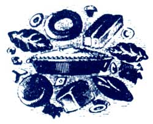
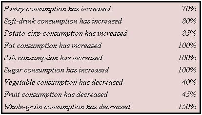

Woodstove Alert
University report alleges congress has hamstrung the EPA and American diet changes over the past 40 years.
By the Mother Earth News editors
October/November 1991
BITS AND PIECES
News from the field:Growing green industries, the boom in bottled water, and the state of your state
AS WINTER APPROACHES, MANY of us depend on woodstoves and fireplaces to heat our homes. While these heating systems can provide warmth as well as atmosphere, they may also be responsible for producing something less appealing-indoor and outdoor air pollution.
According to the American Lung Association, smoke from these heaters contains carbon monoxide, hydrocarbons, and other organic compounds that can cause respiratory illness or aggravate existing conditions such as bronchitis, emphysema, and asthma. Improper burning of wood also causes outdoor air pollution. In fact, the Environmental Protection Agency (EPA) reports that woodstoves and fireplaces emit more carbon monoxide than all U.S. industries combined.
The good news is that recent efforts by the EPA to tighten regulations on woodstoves and fireplace inserts have helped to make newer versions cleaner and more energy efficient.
For those of us still battling with age-old heating systems, the EPA suggests the fol lowing precautions to ensure a cleaner and more complete burning of fuel, as well as a healthier environment:
*Use only wood that has been spilt and dried for over six months.
*Avoid smoldering, low-temperature fires-the greatest polluters.
*Never overload the firebox. This ensures that air circulates freely.
*Never bum garbage, trash, or treated wood since each can emit poisonous fumes.
*Above all, watch for signals such as smoke escaping from the woodstove chimney or lazy flames in the firebox. These are sure signs that more air is needed for efficient burning.
Handcuffing the EPA
Is Congress allowing the Environmental Protection Agency to do its job? Washington University law professor Richard Lazarus doesn't think so. Lazarus, who has written a 20-year history of the agency, says that although he supports the notion that Congress should be a watchdog of the federal government, it has in extreme cases "virtually paralyzed" the EPA. His views are detailed in an article to be published in the Journal of Law and Contemporary Problems.
In his article, Lazarus argues that the intense and negative quality of congressional oversight of the EPA has resulted in the perception that its officials are incompetent, negligent, "and even corrupt. In isolated instances, such a public image may well have been justified. In many others, however, it plainly was not."
Lazarus also notes that congressional oversight has slowed the evolution of federal environmental law and produced poorly designed legislation, "chilled" decision making and innovation within the EPA, exhausted limited agen cy resources, and exacerbated Congress's inconsistency on important environmental matters.
Lazarus, who believes the EPA should be elevated from agency to cabinet status within the federal government, suggests several reforms that would help eliminate ineffective congressional oversight and discusses the political reality of these reforms. For example, he suggests that Congress should hold oversight committee chairpersons more accountable for unnecessary hearings by linking their budget requests to the committee's effectiveness.
Food Timetables
The average American's diet has undergone radical changes since W.W.II. Technology advanced food preparation but may also have led us toward nutritional chaos. The facts below underline the need for more-responsible eating:
In that 50-year span:
In addition, during that time we have increased our consumption of chemically altered foods from 10 to 80% of our total diet.
Source: The Food Bible, by Jayne Benkendorf/Rainbow Books Inc., PO Box 1069, Moore Haven, FL © 1991.
More Evian, Anyone?
In 1990, the water-treatment industry continued its growth trend and reached the highest level of revenue in its history: $7.6 billion, according to a report from the Water Quality Association. It projects $12.27 billion in revenues in the year 1995. The $7.6 billion market represents home drinking-water treatment equipment (9.2%), commercial (11.7%), other residential equipment (14.1%), bottled water (28.9%), and industrial applications (36.1%).
Greenbacks
Good news for those of us who want the earth to grow as our money does: Money magazine reports that the total investment in "green" companies has risen to $625 billion, up from $500 billion last year and a mere $100 billion in 1985.
That's good news for Wall Street and Mother Earth, but with the growing number of "environmental" and "socially responsible" mutual funds out there, a little research reveals, that some of the investments are "greener" than others. For example, the Dreyfus Third Century fund buys certain defense stocks; the Pax World fund doesn't. When investing, make sure your money manager's goals match your own: "Green" to him may just refer to profits from funds that don't follow as strict criteria as you do.
Beam Us Up
File this under the "Why-didn't-l-think-of-that" category: an ultrasonic tape measure. At long last, no more games of tape-measure Twister as you attempt to hold down that unruly metal strip. Now it's just aim and shoot: The Ultrasonic Tape Measurer will read up to 40 feet away, with measurements in your choice of feet or meters. This wonder also adds several measurements and multiplies them to give you area and volume, and is accurate to within +/- 0.5%. To order, send a check or money order, for $29.95 plus $4 shipping and handling to: Jim Davis Enterprises, P.O. Box 315, Suitland, MD 20746. Allow seven to 10 days for delivery.
Till Death or Wellcraft Do You Part
Our senior editor was buying some chops last weekend when she ran across this notice in the neighborhood butcher shop:
W ANTED : G OOD W OMAN W HO E NJOYSC OUNTRY M USIC , L IKES T O C OOK , S EW , A ND F ISH . P LEASE S END A L ETTER A ND P HOTO ... O F B OAT A ND M OTOR .
So all you lonely gals out there with fine culinary skills, steady hands, and an 18-foot Grady-White with a 115-hp Yamaha, drop us a note. We'll pass it on to the lucky guy.
The State of Your Surprise
Surprise, surprise: Oregon and Maine have the healthiest environments in the United States-and Alabama and Louisiana have the worst.
Those findings come from the Green Index, a new study from the Institute for Southern Studies, which uses 256 environmental and lifestyle factors to rate the states.
Oregon's Governor Bar bara Roberts is hardly surprised that her state heads the list. "We' ve lead the way on important envi ronmental legislation," Roberts says, noting that her state was the first to require re cycling and to establish deposits on bottles and cans.
Some other Green Index tidbits:
*Nevada has the best water quality; Florida the worst.
*Maryland produces the most garbage per person; Vermont the least.
*New Yorkers use the least amount of energy per capita; Alaskans the most.
*Alaska is ranked first in quality of life based on natural resources and recreation opportunities; Indiana last.
Do you have any interesting, informative, or timely news from the field you'd like to share with otherMOTHER EARTH readers? If you do, please send your newspaper clippings, press releases, photographs, or true tales to: Bits & Pieces, M OTHER E ARTH N EWS , P.O. Box 129, Arden, NC 28794.
 |
 |
 |
|
|
|
|
|
|
|
|